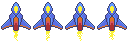

Adding animations and depth¶
We now have something that looks more like a game, having graphics for our spaceship and being able to directly control it.
But our game so far is too boring, the starship is just a static sprite and the background is just a black screen.
In this step we will look at how to improve that, we will replace the static graphics of the player with an animation and create a cool sense of depth and movement by adding a parallax to the background of the game.
So lets start by adding the animation to the player ship! For that, we will something that we call Sprite Animations, which is an animation that is composed by a collection of sprites, each one representing one frame, and the animation effect is achieved by rendering one sprite after the other over a time frame.
To better visualize this, this is the animation that we will be using, note how the image holds 4 individual images (or frames).

Flame provides us with a specialized classes to deal with such images: SpriteAnimation and its component
wrapper SpriteAnimationComponent and changing our Player component to be an animation is quite
simple, take a look at how the component will look like now:
class Player extends SpriteAnimationComponent
with HasGameReference<SpaceShooterGame> {
Player() : super(
size: Vector2(100, 150),
anchor: Anchor.center,
);
@override
Future<void> onLoad() async {
await super.onLoad();
animation = await game.loadSpriteAnimation(
'player.png',
SpriteAnimationData.sequenced(
amount: 4,
stepTime: .2,
textureSize: Vector2(32, 48),
),
);
position = game.size / 2;
}
// Other methods omitted
}
So lets break down the changes:
First we changed our
Playercomponent to extend fromSpriteAnimationComponentinstead ofSpriteComponentIn the
onLoadmethod we are now using thegame.loadSpriteAnimationhelper instead of theloadSpriteone, and setting theanimationattribute with its returned value.
The SpriteAnimationData class might look complicated at first glance, but it is actually quite
simple, note how we used the sequenced constructor, which is a helper to load animation images
where the frames are already laid down in the sequence that they will play, then:
amountdefines how many frames the animation has, in this case4stepTimeis the time in seconds that each frame will be rendered, before it gets replaced with the next one.textureSizeis the size in pixels which defines each frame of the image.
With all of this information, the SpriteAnimationComponent will now automatically play the
animation!
Now lets add some depth and energy to our game background. Of course there are many ways of doing so, in this tutorial we will explore the idea of parallax scrolling. If you never heard about it, it consist of a technique where background images move past the camera with different speeds, this not only creates the sensation of depth but also improves the movement feeling of the game a lot. If you want to read more about Parallax Scrolling, check this article from Wikipedia.
Flame provides classes to implement parallax scrolling out of the box, these classes are Parallax and
ParallaxComponent, so lets take a look at how we can add that new feature to the game:
class SpaceShooterGame extends FlameGame with PanDetector {
late Player player;
@override
Future<void> onLoad() async {
final parallax = await loadParallaxComponent(
[
ParallaxImageData('stars_0.png'),
ParallaxImageData('stars_1.png'),
ParallaxImageData('stars_2.png'),
],
baseVelocity: Vector2(0, -5),
repeat: ImageRepeat.repeat,
velocityMultiplierDelta: Vector2(0, 5),
);
add(parallax);
player = Player();
add(player);
}
@override
void onPanUpdate(DragUpdateInfo info) {
player.move(info.delta.global);
}
}
Looking at the code above we notice that we are now using the loadParallaxComponent helper
method from the FlameGame class to directly load a ParallaxComponent and add it to our game.
The arguments used there are as follows:
The first argument is a positional one, which should be a list of
ParallaxDatas. There are a couple of types ofParallaxDatas in Flame, in this tutorial we are using theParallaxImageDatawhich describes a layer in the parallax scrolling effect that is animage. This list will tell Flame about all the layers that we want in our parallax.baseVelocityis the base value for all the values, so by passing aVector2(0, -5)to it means that the slower of the layers will move at 0 pixels per second on thexaxis and-5pixels per second on theyaxis.Finally
velocityMultiplierDeltais a vector that is applied to the base value for each layer, and in our example the multiplication rate is5on only theyaxis.
Give it a try by running the game now, you will notice that it looks way more dynamic now, giving a more convincing feeling to the player that the spaceship is really crossing the stars!
1import 'package:flame/components.dart';
2import 'package:flame/events.dart';
3import 'package:flame/game.dart';
4import 'package:flame/input.dart';
5import 'package:flame/parallax.dart';
6import 'package:flutter/material.dart';
7
8void main() {
9 runApp(GameWidget(game: SpaceShooterGame()));
10}
11
12class SpaceShooterGame extends FlameGame with PanDetector {
13 late Player player;
14
15 @override
16 Future<void> onLoad() async {
17 final parallax = await loadParallaxComponent(
18 [
19 ParallaxImageData('stars_0.png'),
20 ParallaxImageData('stars_1.png'),
21 ParallaxImageData('stars_2.png'),
22 ],
23 baseVelocity: Vector2(0, -5),
24 repeat: ImageRepeat.repeat,
25 velocityMultiplierDelta: Vector2(0, 5),
26 );
27 add(parallax);
28
29 player = Player();
30 add(player);
31 }
32
33 @override
34 void onPanUpdate(DragUpdateInfo info) {
35 player.move(info.delta.global);
36 }
37}
38
39class Player extends SpriteAnimationComponent
40 with HasGameReference<SpaceShooterGame> {
41 Player()
42 : super(
43 size: Vector2(100, 150),
44 anchor: Anchor.center,
45 );
46
47 @override
48 Future<void> onLoad() async {
49 await super.onLoad();
50
51 animation = await game.loadSpriteAnimation(
52 'player.png',
53 SpriteAnimationData.sequenced(
54 amount: 4,
55 stepTime: 0.2,
56 textureSize: Vector2(32, 48),
57 ),
58 );
59
60 position = game.size / 2;
61 }
62
63 void move(Vector2 delta) {
64 position.add(delta);
65 }
66}